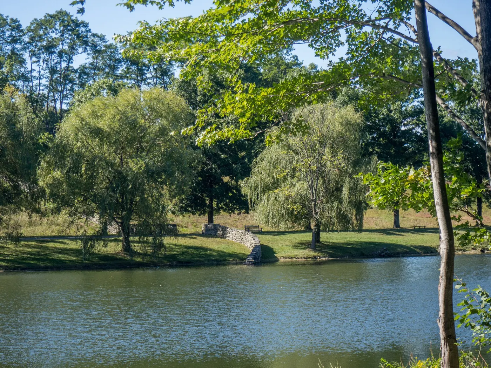

Kaaterskill Falls
The classic Catskills walk. Parking is limited and the trail can be icy; check conditions first.
Check trail conditions

Mountains, small towns and a slower pace — but this one needs a car or a bus, not a Metro-North ticket.
The Catskills are close enough for two nights and big enough to feel like a real break. Base in Phoenicia or Woodstock and let the weather decide the day.
Without a car, the Trailways bus from Port Authority gets you to Phoenicia, and local taxis cover the trailheads. With a car, the options multiply: Kaaterskill Falls, the Devil's Path and the towns along Route 28.
One big walk, one town, one slow morning.
The classic Catskills walk. Parking is limited and the trail can be icy; check conditions first.
A small main street, a river and good coffee. The easiest base without a car.
Shops, food and a short drive to Overlook Mountain. Busier than Phoenicia.
Arrive Friday, walk Saturday, drive home Sunday.
Bus or drive up, check in, dinner in town. Keep the evening short.
Kaaterskill Falls in the morning, a late lunch, then Woodstock or a shorter river walk in the afternoon.
Per person, excluding shopping.
| Item | Typical | Notes |
|---|---|---|
| Bus | $60–70 | Round trip from Port Authority |
| Cabin or inn | $220–380 | Two nights |
| Car | fuel + tolls | If driving |
| Food | $100–140 | Two dinners, two lunches |
Yes: bus to Phoenicia and taxis to trailheads. It is easier with a car, especially for Kaaterskill Falls.
Yes. One full day is enough for a big walk and a town; two nights keep it relaxed.
Late spring to autumn for walking; winter needs proper gear and flexible plans.
All destinations compared by journey time and what they are best for.